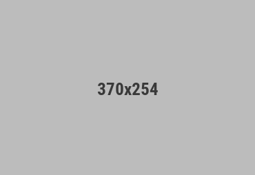
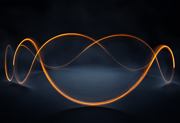

May 2026 · 2 min read

The most praised digital products of 2026 share a quiet quality. They don't shout. They don't animate everything that can be animated. They don't layer notification badges on top of tooltips on top of modals. They breathe — and users notice.
This is the era of calm interfaces: designs that reduce cognitive load by showing less, meaning more. The shift isn't about minimalism for its own sake. It's a direct response to years of engagement-first design that left users anxious, overwhelmed, and burned out on the very tools they depended on.
Calm design doesn't mean boring. It means purposeful restraint. A calm interface surfaces the right information at the right moment — not everything all at once. It uses whitespace as a functional element, not empty space to fill. Typography carries hierarchy without needing color to shout. Motion, when present, is subtle and meaningful.
Think of the contrast between a dashboard that greets you with seventeen widgets, three unread banners, and an animated onboarding tooltip — versus one that shows you exactly what changed since yesterday and nothing else. The second is harder to build. It requires deep decisions about what actually matters to the user at that moment.
User research consistently shows that interface complexity correlates with task abandonment. When a screen presents more than five to seven decision points simultaneously, error rates climb. Completion rates drop. Users report feeling "stupid" even when the failure is entirely a design problem.
Calm interfaces flip this by building in progressive disclosure — revealing complexity only when the user asks for it. The surface stays clean. The power stays accessible. This pattern shows up in the most successful redesigns of recent years: apps that removed features in a version update and saw engagement go up because the core workflow became frictionless.
"A calm interface is not one that does less — it's one that decides, on behalf of the user, what deserves attention right now."

Start with subtraction. Before every design review, ask: what can be removed without breaking the core task? Default states should show the minimum. Expanded states reveal depth on demand. Notifications should require justification — if a system wants to interrupt the user, it needs a strong reason.
Color is one of the fastest ways to create or destroy calm. Limit accent colors to actions that require a decision. Use neutral backgrounds and generous line-height in body text. Avoid competing focal points on a single screen.
Finally, motion. Every animation should have a job. Transitions that orient the user — showing where a panel came from, confirming an action completed — earn their place. Animations that exist to demonstrate the product's technical capability rarely do.
AI is making calm design harder and more important at the same time. Harder, because AI-powered features bring new surface area, new states, and new ways for interfaces to become unpredictable. More important, because users navigating AI-assisted tools are already cognitively taxed — they're evaluating outputs, making judgment calls, staying in the loop on automated decisions.
The products that will define this next wave won't be the ones that surface the most AI capability. They'll be the ones that make AI feel like a quiet, capable partner — present when needed, invisible when not. That's calm design at its most valuable.